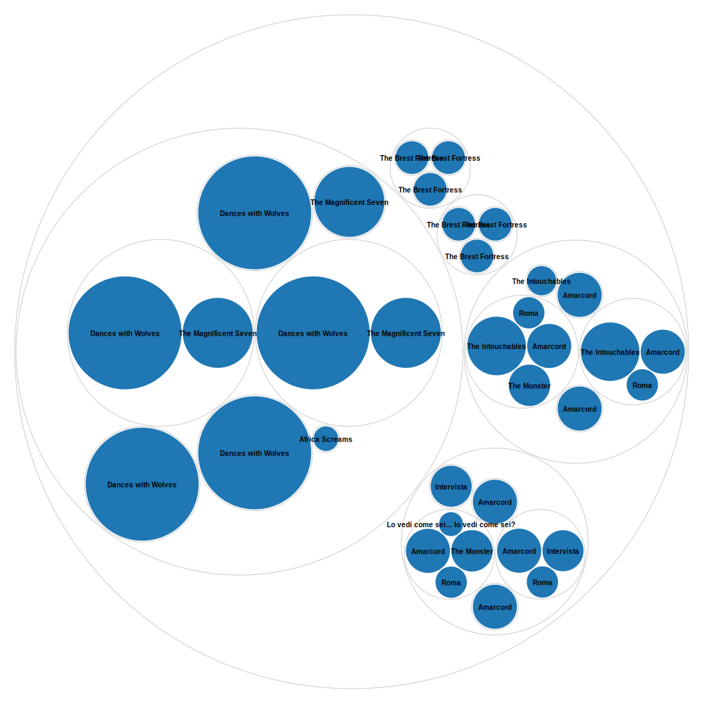

Code de la requête en SPARQL Wikidata
#defaultView:Timeline
SELECT ?film ?filmLabel ?publication_date ?country_of_originLabel ?duration ?genreLabel ?image WHERE {
SERVICE wikibase:label { bd:serviceParam wikibase:language "[AUTO_LANGUAGE],en". }
?film wdt:P31 wd:Q11424.
OPTIONAL { ?film wdt:P495 ?country_of_origin. }
OPTIONAL { ?film wdt:P577 ?publication_date. }
OPTIONAL { ?film wdt:P2047 ?duration. }
OPTIONAL { ?film wdt:P136 ?genre. }
OPTIONAL { ?film wdt:P18 ?image. }
FILTER EXISTS { ?film wdt:P18 [] }
}
LIMIT 100
Graphe RawGraph
